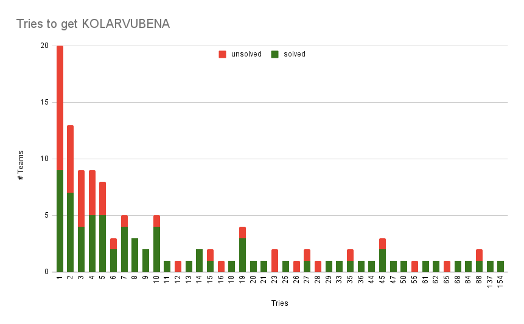
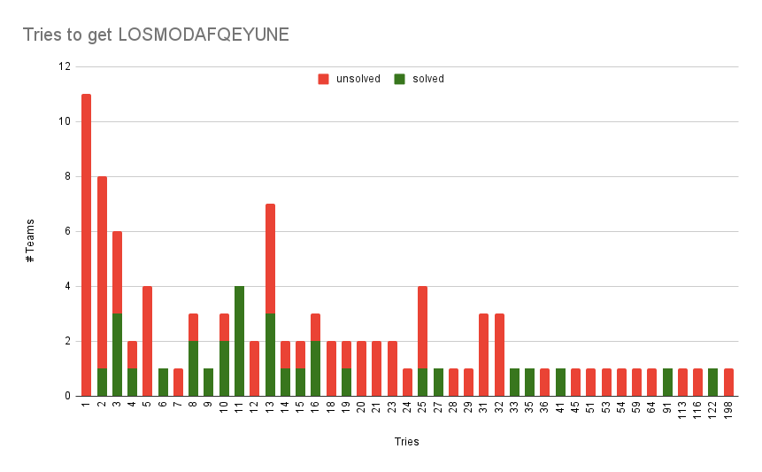
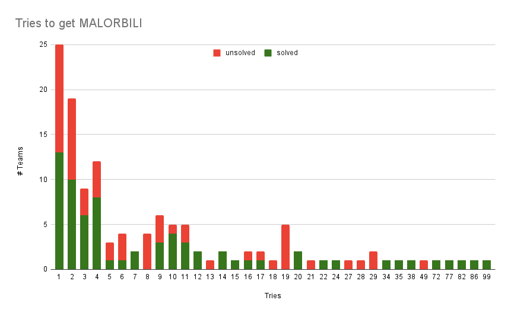
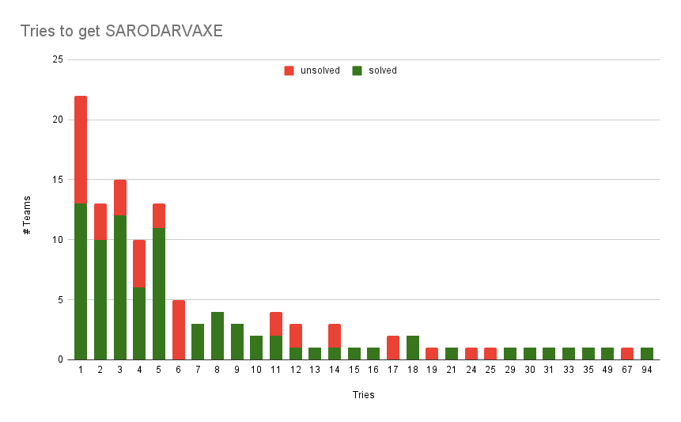
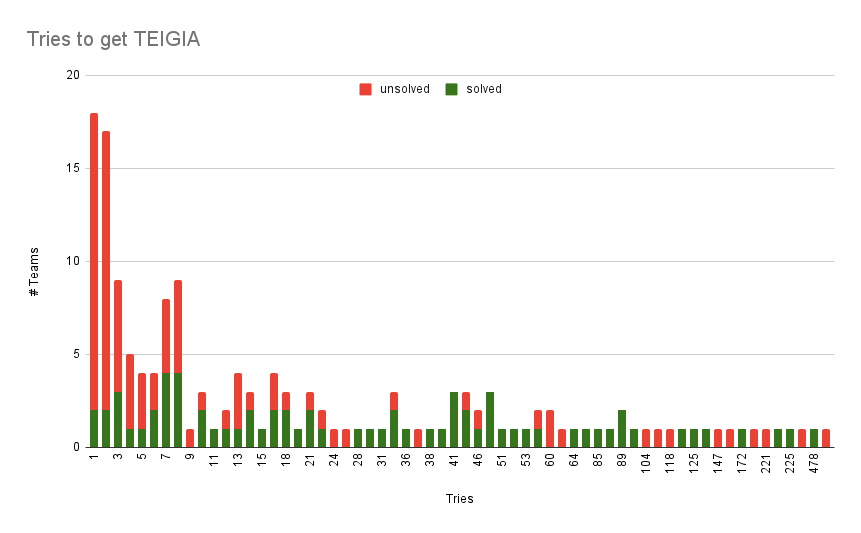
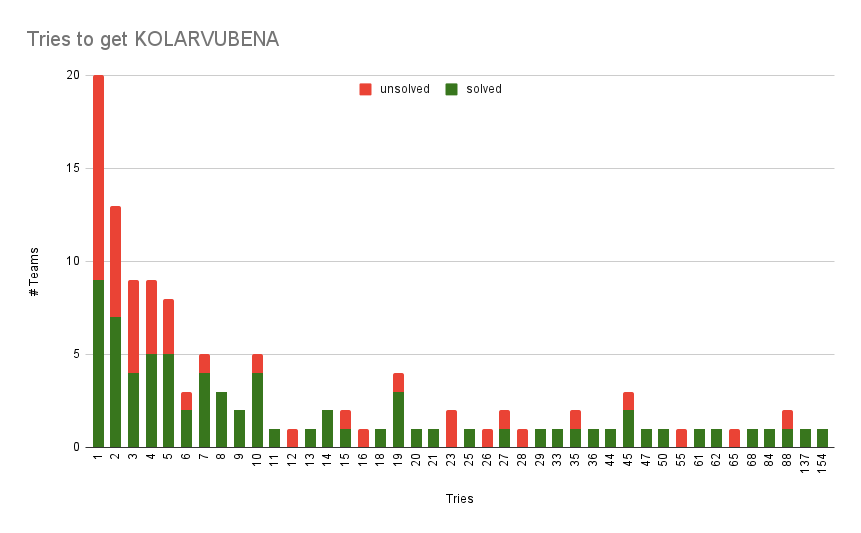
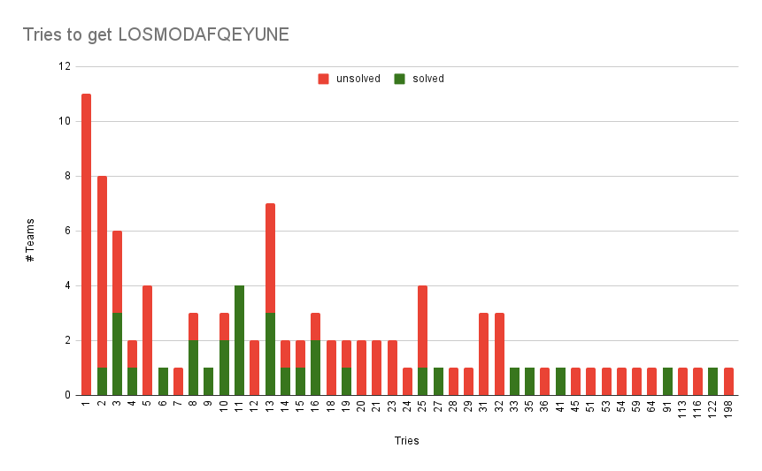
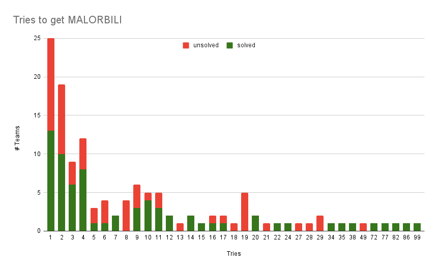
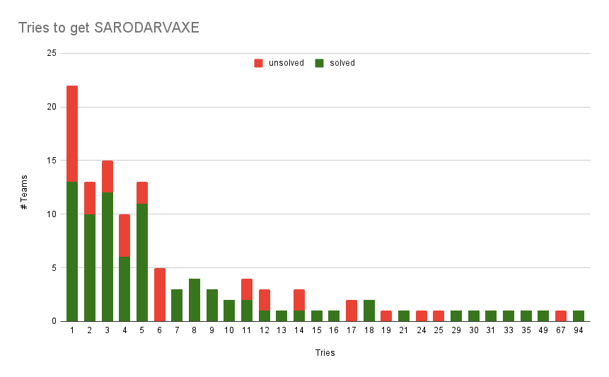
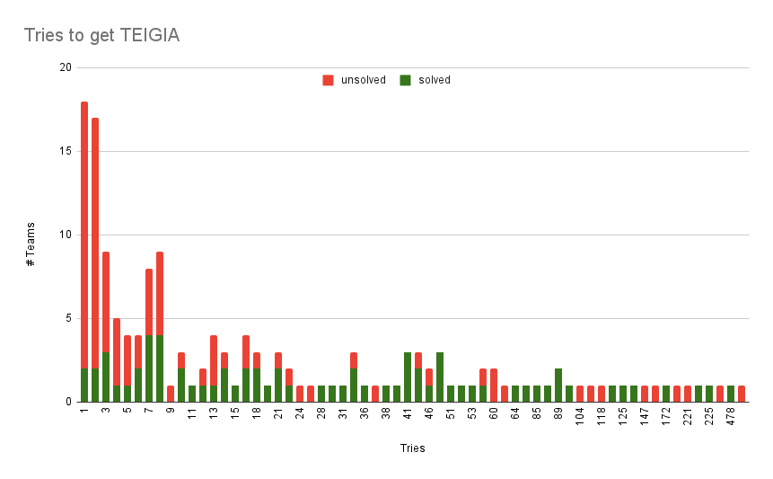

Solution: Word Salad
Answer: GOOD EATS
Written by Charles Tam
This is a puzzle about etymology! The puzzle starts with 28 dictionary entries written in Puflantu, for which eight of them are missing the word being defined. In addition to the guide provided, translations of every word obtainable by pronoun infixing and pluralization from the 2019 Puflantu dictionary are automatically given.
Solvers must determine the meanings of the words from context and similar known words, as well as the identities of the things being described in the eight "wordless" entries. Each of those entries concludes in a sentence describing the Puflantu etymology of the word, which must be pieced together from those instructions and the provision of the relevant morphemes in other clues. The entire list is presented in alphabetical order by Puflantu spelling, which can help with translation.
| English | Puflantu | Morphemes |
|---|---|---|
| TOFU | apoTofu |
apo "white" + tofu imported; note Puflantu singular nouns can't end in -w |
| VINEGAR | faSibwmi tini |
fasib "to decay" from TOFU clue + -wmi past participle marker + tini "wine" |
| CITRIC ACID | gevaxegOmu zixo |
gevaxe "sour" from VINEGAR clue + -gomu "fruit" + zixo "acid" from VINEGAR clue |
| SANDWICH | kolarvubEna |
kolarvu "bread" + -bena "side" or "-gon" (as in "hexagon") |
| ROCK LOBSTER | losmoDafqeyune |
losmodafe "claw" or "crusher" + -qeyuna "-less" or "-lacking" from VINEGAR clue |
| TAPIOCA | mAlorbili |
malo "starch" from SANDWICH clue + orbili "jelly" |
| HORSERADISH | sarOdarvaxe |
saro "spicy" from VINEGAR clue + darvaxe "root" from TAPIOCA clue |
| CAFFEINE | teiGia |
tei "tea" from TAPIOCA clue + -gia chemical from VINEGAR and CITRIC ACID clues |
Extracting the indicated letters from the Puflantu targets, and sorting them by their English translations, yields the answer GOOD EATS.
| English | Puflantu |
|---|---|
| CAFFEINE | tei[G]ia |
| CITRIC ACID | gevaxeg[O]mu zixo |
| HORSERADISH | sar[O]darvaxe |
| ROCK LOBSTER | losmo[D]afqeyune |
| SANDWICH | kolarvub[E]na |
| TAPIOCA | m[A]lorbili |
| TOFU | apo[T]ofu |
| VINEGAR | fa[S]ibwmi tini |
Author’s Notes
Nathwe sinqera-li atimbwris cuafwe nathwe jifeyeda, avroxes ovekqayu zat. Nagutaqo esaora imosgaq merwmin-dis vogoconotuma im orcwmal. Eywe nathwe, yadafe-li yadwmi dokfes odelemida tidul piwyeywv. Eqa 13203-tis im twyotol-lis, nathuduremo voxifa ovekqayu zat-ka av patem.
Sivega gaq jatif-ka orcwmal, solavafwe onnatho-fws aratodus-ka. 13202-ro "Wepu Puflantu Noma-Ji'saga" jok imgaq nagwmotut-dis, solavafwe ombu Puflantu genwho mida exadin-ka im twmol. Ogi'fwe nathoviqwe biadodala tizov ogfatel-ka im orcwmal.
Albwr eta pazulu im nagwyut-kas, nagtaqo zovgire piwva exwyin-ka im mwyap. 13203-rwe ampazulwe, nathuduremo-li tacwlzove-li swmwe ejwe-bes zad. Aldul eta nathwe hengorwe-bes nagwyut. Vosivegwmi iglextu pazulu aqes gaq zat-ka orcwyeyal. Podhe ayegos, tizov utarai Puflantu pazulu etfel nagwyut, Puflantu pazulu aza exatin-ka et calpwyem.
Axwe ✈'✈'✈' Puflantu Pazulnagutwe '✈'✈'✈ ewswmodig, eta pazulu-ro ovekqayu'fwe rojdwe im utarsoladav-ka. Chris Jones-li Alex Pei-li Patrick Xia-fws anuv'we ewsigwe pwmog, tidul agyoxukwe nagutodwe im gaden. Ogwe zepaxwe im biadal, albwr agagwri Puflantu-fws imos agmwmid-ka amqos.
Per-word Solve Rates
| Puflantu | Solves | Avg tries (solved) | Avg tries (unsolved) | First solve |
|---|---|---|---|---|
| APOTOFU | 88 | 14.43 | 28.38 | 44 |
| FASIBWMI TINI | 37 | 20.35 | 16.00 | 0 |
| GEVAXEGOMU ZIXO | 29 | 21.10 | 17.01 | 2 |
| KOLARVUBENA | 74 | 19.66 | 12.37 | 11 |
| LOSMODAFQEYUNE | 30 | 20.10 | 22.04 | 4 |
| MALORBILI | 70 | 13.10 | 08.90 | 7 |
| SARODARVAXE | 81 | 8.62 | 08.50 | 22 |
| TEIGIA | 70 | 47.33 | 35.33 | 12 |
{kind=link}

 
{kind=link}
{kind=link}
{kind=link}
{kind=link}
{kind=link}
Full Walkthrough
Though it does help to be familiar with Puflantu from its 2019 appearance, it is intended that all the important information from that hunt is provided either in the "Crash Course" or in the dictionary. A few other things can help in guessing the meanings of the words:
- Keep in mind that nouns and adjectives always end with vowels, and verbs (and the occasional adverb) always end in consonants.
- Many words are obtained from pieces of other Puflantu words – use the dictionary search at the bottom of the puzzle page to see if pieces of an unknown word appear anywhere else. Clicking on a word also shows dictionary entries that are very close in Levenshtein distance, but for more than three results the widget at the bottom of the page must be used.
- Verbs are conjugated by infixing against a pronoun table that solvers probably don't have memorized. It can be helpful to pull these pronouns out in a partial translation so that you don't have to think about them anymore. Knowing that verbs always end in consonants can save solvers from doing this unnecessarily.
- Writing out the sentences in English word order (or other more familiar language of your choice) can help clarify the relationships of the words to each other.
In addition to the morphemes provided in the Crash Course, solvers should find the following ones from given words and context:
- hen- and am-: Roughly "in-" and "out-/ex-".
henqos"inside" is used constantly throughout the puzzle, contrasting with a couple instances ofamqos"outside" anddefiqos"left-side". In addition, thedaredefinition block giveshenhiaden"they-inhale" andamhiaden"they-exhale". - -gia: Roughly "-ine" or "-ide" or "-ate", denoting a chemical compound.
The definition blocks for target words 1 and 3 contain references to
chemical reactions with sodium compounds, and the
dareblock mentions "carbonfe'avugia". - -enx-: "Water", notably in given words
enxura"water+R" andenxaq"to submerge". A few other relatives appear in places where a water-thing makes sense. - zam-: Roughly "salt", appearing in given words
zampaliso"cheese" andzamgomu"tomato", fromzalma"salt". - og-: Denotes many of something, from
ogi"many". Among the given words areoghie"popular" (many people) andogviqe"majority" (many part). - -tu: Roughly "-ish", as in the language suffix. The word onto which
-tuis appended is the phonetically imported name of the language in that language; for exampleiglextufrom "English", orjogwuntufrom "zhong1 wen2". - -quna and -qeyuna: Literal words for "-having" and "-not-having". The
latter is described explicitly in the
ityeriqeyunadefinition block.
We also make frequent use of the fluid noun class, which is employed whenever the head of a noun phrase is a fluid. In the annotations below, we denote this as "+R".
Known Words
We start by trying to figure out the definition blocks for the non-target words. These blocks can all be resolved mostly independently of one another assuming very strong intuition on solvers' part; in practice some cross-referencing and grammatical trial and error is required.
We present these below with the full Puflantu text first; followed by that text with all known words replaced and inflections separated out; followed by a rereading of that text with a roughly correct English word ordering.
amwen (to surround, to envelop)
Albwr swma, rai swma amwaten-kas, utaru swma feru-ro axwe benwe amqos zatif-li,
feru utaru henqos zatif.
When thing, other thing it-amwens, first thing second's all sides outside
it-is-located and, second first inside it-is-located.
When a thing amwens another thing, the first thing is outside all the
second's sides, and the second is inside the first.
Solve Path
The intended translation of the unknown word is "to surround" or "to envelop" or
"to wrap". ("To cover" is a reasonable try but it already exists in the
dictionary as urmez.)
besolafe (singer)
Uta besolafe, pelipa zoves tacalwl-ka hie zat. Edo Xiranu-li Teilo Swifu-li
Sa-naseksu, oghiwe lahrogbwe besolafwe zad.
One besolafe, specific way that-speaks person it-is. Edo Xiranu-and
Teilo Swifu-and Sa-Naseksu, popular Earth besolafwe they-are.
A besolafe is a person that speaks in a specific way. Ed Sheeran and Taylor
Swift and Diminutive Nas X are popular Earth besolafwe.
Solve Path
The celebrity names are mostly phonetically imported, including an abuse of the
diminutive sa- prefix seen in various places and described in the Crash
Course. The -afe suffix suggests that this is a kind of person that does
something; the particular celebrities chosen suggests that this is a singer (and
by extension, besol "to sing").
casu (dust, powder)
Albwr swma, ageywe viqwe eg mohotur-li losmotod-kas, iqwe viqwe "casu" zad.
Tizov casu rizwe tamwe-tis fel jatif, mida fel merizeyin.
When thing, very-small parts resultingly it-is-flattened-and it-is-losmoded,
those parts "casu" they-are. This-way casu your eyes-at it-might-exist,
seeing you-might-not-be-able.
When a thing is flattened and losmoded into small pieces, those parts are
casu. If casu is on your eyes, you might not be able to see.
Solve Path
There are a variety of options for verb losmod here – "to grind", "to
crush", "to break" and so forth. (Existing word losmodafe "claw" doesn't
really narrow things down here.) However casu is reasonably guessed as "sand",
"powder", "dust", or something similar, based on its description as an eye
irritant made of very small parts.
dare (plant, flora)
Uta dare, wrisa swma zat. Lahrogbi-tis, colbawe pahilamwe ogwris qadun, alzov
utqunxe-ro ittiha wladoc. Wrifuli fe'avugia henhiaden-li e'avuli amhiaden. Ratwe darvaxwe-cws
enxura ratiq.
One dare, living thing it-is. Earth-at, green pahilamwe commonly
they-have, that-way sun+T's light+T they-eat. Carbon fe'avugia
they-inhale-and oxygen they-exhale. Its darvax*s-from water+R it-drinks.
A dare is (a) living thing. On Earth, they often have green pahilam*s, in
order to eat sunlight. They inhale carbon fe'avugia, and exhale oxygen. It
drinks water from their darvax*s.
Solve Path
From context it is reasonable to infer dare as "plant", "tree", "grass",
"algae", or some other kind of flora. Pahilam* looks like it should be
"leaf" unless "green pahilam*" is "chlorophyll". Fe'avugia is clearly
"dioxide" from context, and a careful dissection of the word shows fe "two"
and e'avu(li) "oxygen". At this point it may still be unclear what -gia
is. Darvax* should be "root", also from context; solvers may be able to see
dare "plant" and vax- "below, under, bottom".
eyozzove (flavor, taste)
Locho-ro eyozzove, zove motap, albwr eqa locho wlotoc-kas. Zalma-vo twipe-vo
zamkuraxwe ogwris piodwv, tizov eyozzovwe omafadodil-kas.
Food's eyozzove, way it-is-felt, when that food it-is-eaten. Salt-or
sugar-or zamkuraxwe commonly they-are-used, this-way eyozzoves
they-omafil-them.
A food's eyozzove is how it feels when that food is eaten. Salt, sugar, or
zamkurax*s are commonly used because they omafil eyozzoves.
Solve Path
From the first sentence this should be "taste" or "flavor". Finding given word
eyos "to taste" is a decent confirmation that this is in the right directly;
some solvers may notice eyos "to taste" + zove "way, manner". It might
not be clear what zamkurax* is. Knowing eyozzove is "flavor",
omafil looks like "to improve" or "to enhance", which can be confirmed as a
verbification of given word oma'fi "better".
hengoro (source, origin)
Swma-ro "hengoro", hanu-fo bwri-fo rai zat, utaru swma ol-cws capatil-ka.
Puflantu-ro hengoro 13202 pazulu-li 13203 pazulliqexu zat.
Thing's hengoro, place-or time-or other it-is, first thing that-from
it-comes. Puflantu's hengoro 2018 puzzle-and 2019 puzzlehunt it-is.
A thing's hengoro is a place or time or other thing from which the first
thing comes. Puflantu's hengoro is a 2018 puzzle and a 2019 puzzlehunt.
Solve Path
Reasonable guesses here are things like "birth(place/time)", "origin", or
"source". Exact interpretation of the second sentence requires knowledge that
Puflantu communicates in base 6, but just knowing that it's a construct from a
previous year is good enough to check the sense of hengoro.
ityerqeyuni (colorless)
Swma "ityerqeyuni" zat, tidul ityeri qateyun-kas (o.c. ityeri qeyuna zat).
Swtabxaywe swmwe, "apo"-fo "wre" jok gamas ogviqes sinqwyoder.
Thing ityerqeyuni it-is, this-reason color it-does-not-possess (o.c.
color not-having it-is). Not-transparent things, "white"-or "black" as instead
mostly we-describe-them.
A thing is ityerqeyuni if it doesn't have color (o.c. it is
color-lacking). We mostly describe non-transparent things as being white or
black instead.
Solve Path
The text pretty much spells out the etymology here for "colorless". In
particular we take note of the -qeyuna suffix as being a thing, and might
guess that the corresponding -quna suffix also works to indicate that
something is present (perhaps like English "-less" and "-ful" respectively).
jwntatimoru (counterpart, partner)
Swma rato "jwntatimoru" atimator, rai hanu-fo rai bwri henqos. Albwr swmw jwntu
henqos jabif, ab urarai-ro "jwntatimorw" zab.
Thing its jwntatimoru it-matches, other place-or other time within. When
two-things pair within they-exist, they-two each-other's jwntatimorus
they-are.
A thing matches its jwntatimoru in another place or time. When two things are
paired, they are each other's jwntatimoru.
Solve Path
The text suggests "partner" or "counterpart". Some solvers may notice jwntu
"pair" and atimor "to match" in the dictionary.
kaxo (fluid, liquid)
Swma "kaxo" zat, tidul rato velbena binpateyan (r.c. radokodqeyuna zat) -li
ovekqus esator-kas. Albwr orvuro kaxro-bes tacwywl-kas, "r" feru awbe defiqos
kwyar.
Thing kaxo it-is, this-reason its shape it-does-not-continue (r.c.
radokodqeyuna it-is) -and easily esator. When some kaxo-bes we-speak,
"r" second awbe defiqos we-add.
A thing is kaxo if its shape does not stay (r.c. it is radokodqeyuna) and
it easily esors (or esaors). When we speak bes some kaxo, we add "r" defiqos second
awbe.
Solve Path
If you have the suffix -qeyuna "-less" from ityerqeyuni "colorless", you can
translate radokodqeyuna as "formless" or "shapeless". (See Target 5 about the
vowels.)
The second sentence strongly recalls instructions about the -r- infix described
in the Crash Course (or maybe you just remembered it from 2019). That and the
first sentence confirm kaxo "liquid" or "fluid", esor "to change" or maybe
"to deform", and awbe as "vowel". Bes is written like one of our small
prepositions and from context can only really be "about". Defiqos matches with
given word defisa "left-side" and henqos "within/inward" as "leftward".
kombwqa (kombucha)
Ita sazixro teri riqhuro zat. Aguyri e'ranxagia qatun. Twripe teri-li
sazwmswe-li laksalfa rulfoba-cws qotuk. Orvwe hiwe, uglube zat-ka tixmadap.
(Zikpe: Tizov nihogotu tacwlafe eta-bes fel tizwk-kas, odrelesa riqhuro ez-fws
et patog.)
This sazixro teri beverage+R it-is. Very-little+R e'ranxagia it-has.
Sugar+R teri-and sazwms*s-and yeast combining-from it-is-made. Some people,
medicine it-is they-think. (Danger: This-way nihogotu speaker this-bes
you-might-ask, difference+R beverage you-toward it-will-give.)
This is a sazixro teri beverage. It has very little e'ranxagia. It is made
from combining sugary teri and sazwms*s and yeast. Some people think that
it is medicine. (Danger: If you ask a nihogotu speaker this-bes, they will
give to you a different beverage.)
Solve Path
Pronouncing the word out loud should put solvers in mind of the drink
"kombucha", whose word is imported directly. The list of ingredients for
kombucha includes a "symbiotic culture of bacteria and yeast" (so commonly
worded in this fashion that its acronym is understood), so sazwmswe must be
"bacteria" and the sweet liquid must be tei "tea" (after taking out the +R
transformation). Etymologically "kombucha" is noted for being an incorrectly
imported word from nihogotu "Japanese" (via "nihongo"), wherein it refers to a
non-fermented kelp tea. Bes could be "for" or "about", or some other object
indicator.
Of the remaining words we have sazixro or slightly zixo+R as a
characteristic of kombucha; and e'anxagia+R which is present in some small
quantity. Other characteristics of kombucha that might come to mind are
"probiotic", "fizzy", "acidic", "antioxidant", and maybe "healthy" (depending on
what blogs you read). Solvers might be able to get e'anxagia "alcohol" as
e'a "fire" + enxa "water" + -gia "chemical".
Sazwmsi "bacterium", lit. "diminutive fish", was chosen in
parallel with "bacterium", lit. "diminutive staff/rod", the idea being that one
names them after whatever they look like when they're spotted under a microscope
for the first time. Tei "tea" was chosen based on human languages picking "t"
or "ch" ("q*") depending on whether their first exposure traces back to Britian
faster than to China.
lwgoro (substance, material)
Uta lwgoro swma eji zat. Rawe ot-cws qukwmi aza meradin. Nagtice-li enxura-li
alvite, lwgorwe zad. Gica-li hie-li zagtivo, lwgorwe zadey.
One lwgoro thing type it-is. Others it-from produced being they-can.
Nagtice-and water-and silver, lwgoros they-are. Shoe-and person-and
asteroid, lwgoros they-are-not.
A lwgoro is a type of thing. Other things can be produced from it.
Nagtice and water and silver are lwgoros; shoe and person and asteroid
are not.
Solve Path
From the description we can guess something like "element", "material",
"matter", "substance", or "resource" for lwgoro. We can't really infer
anything about nagtice here but it has its own definition block later.
mapoca
We'll skip this one for now.
nagtice (paper)
Nagtice, pahilame lwgoro zat, nathwe ol-bedfis ajena merizin-ka. Ogwe nagticwe
jiay xifwmi aza meradin, kude eg.
Nagtice, pahilame lwgoro it-is, words it-atop putting you-can. Many
nagtices together xifwmi being they-can-be, book resultingly.
Nagtice is a pahilame lwgoro, which you can put words on. Many
nagtices can be together xifwmi resulting in a book.
Solve Path
This doesn't give much to work with for the other words, but assuming that we're
talking about a physical thing the second sentence implies nagtice is
"paper", even if we're not sure what xifwmi is. A dictionary search yields
xifafe "knot", so a reasonable guess is xif as "bind" or "tie" and
xifwmi as "bound" or "tied". (xif "twist" might also be a candidate but
there aren't many things that can be said to make a book after being twisted
together.)
ogerok (to shred)
Albwr swma ogerotok-kas, ogwe viqwe etataz. Zampaliso-li nagtice ogerokwmi aza
meradin.
When thing it-is-ogeroked, many parts it-becomes. Cheese-and nagtice
ogeroked being they-can.
When a thing is ogeroked, it turns into many parts. Cheese and nagtice
can be ogeroked.
Solve Path
There are a lot of transformative words that can fit here, but if we restrict
ourselves to ones that can be applied to cheese we have mostly culinary ones
like "to slice", "to grind", "to blend", "to grate", and so forth (as opposed to
"to shatter" or "to disassemble"). If we have nagtice "paper" this is
narrowed down to options like "to pulp" (as for papier mache) or "to shred".
ogviqe (majority, most (proportion))
Swma-ro "ogviqe", rato agi' viqe zat. Iqa natho, uta tola zove karkas nagtatal,
orvwe amrwtiwe piadolwv-ka.
Thing's "majority", its biggest part it-is. That word, one choosing way also it-names, some societies they-use-that.
A thing's majority is its biggest part. That word also names a selection method which some societies use.
Solve Path
This block is already translated in its entirety, but it does give solvers an
extra way to check their grammar. In addition it shows the words viqe "part"
and nagtal "to name", which solvers will encounter other conjugations for in
the rest of the puzzle. None of the other conjugations of "to name" are
automatically translated, so solvers will have to enter in nagtwyotal
"we-name-it" or nagtotal "it-is-named" as they are encountered.
ovekqipiwvu (convenient)
Albwr piotwv-kas, ovekqipiwvu swma, ovekqipiwvayu swma jifated-sos, uyi'fi bahu
jifated. Albwr hie forovwe dokfe natib-kas, qacepo ovekqipiwvu'fi zat, zagtivo
zat-sos.
When it-is-used, ovekqipiwvu thing, not-ovekqipiwvu thing it-jifeds-than,
less trouble it-jifeds. When person planets between it-moves, spaceship
more-ovekqipiwvu it-is, asteroid it-is-than.
When it is used, a thing that is ovekqipiwvu jifeds less trouble than one
that is not. When a person moves between planets, a spaceship is more
ovekqipiwvu than an asteroid.
Solve Path
The second sentence and the similarity to ovekqu "easy" suggests options
like "expedient", "efficient", or "comfortable" (the latter helping to rule out
things like "reliable", "safe", "legal", or "acceptable"). Context gives us
jifed as "to incur", "to encounter", or "to create".
twipelame (candy)
Ogwe hiwe somalodun-ka twipe locho eji zat. Ogwe twipelamwe, rotwipe-vo gomu
eyozzove mwadoten.
Many people that-pleases-them sugar food type it-is. Many twipelames,
chocolate-or fruit eyozzove they-hold-it.
It is a sweet food type that many people like. Many twipelames have
chocolate or fruit eyozzove.
Solve Path
The cluing gives us twipelame candidates like "confection", "dessert",
"cake", "pastry", "candy", and so forth.
vaxtipu (bedrock, foundation)
Onamgenas, "vaxtipu" atipu eji zat, ol zoan niba agovekqayu zat. Vaxtipu,
exuri'fwe swmwe vaxfis zatif. Cobargenes, ot bedfis, rawe swmwe amrodad.
Onamgenas, vaxtipu rock type it-is, that through moving very-not-easy
it-is. Vaxtipu, softer things below it-is-located. Cobargenes, it atop,
other things they-are-amraded.
Onamgenas, vaxtipu is a rock type that is difficult to move through. It
is located below softer things. Cobargenes, other things are amraded on
top of it.
Solve Path
From vax- "bottom" and atipu "rock" we guess vaxtipu as "bedrock", though
the rest of the definition is a bit awkward. Amrad is likely some kind of
placement verb, and a dictionary search yields amradoda "building", so amrad
is probably "to build" or "to construct".
Onamgenas and cobargenes should be interpreted as two contrasting senses for
a word; in particular, onamgenas appears frequently elsewhere in the puzzle in
the context of a word indicating something. A dictionary search gives onama
"equal", cobare "poem", and gen "to read"; solvers are intended to infer
onamgenas "literally" and cobargenes "metaphorically" or "figuratively".
yirwhanu (subject, topic)
Uta yirwhanu, yirwho wndatolak-ka swma zat. (Iqa yirwho eqa yirwhanu-bes zat.)
Yirwhanu karkas zat, lifanice-tis ol-bes yizel-ka-fos uta kude ol-bes
nagotut-kas.
One yirwhanu, idea it-refers-to-that thing it-is. (That idea that
yirwhanu-bes it-is.) Yirwhanu also it-is, school-at that-bes
you-learn-or books that-bes they-are-written.
A yirwhanu is a thing that an idea refers to. (That idea is yirwhanu-bes.)
It is also a thing-bes you learn at school or a thing-bes books are written.
Solve Path
The first sentence suggests something abstract like "concept", "knowledge",
"subject", "topic", "information", which is somehow learnable and writable. If we
didn't already have it from the single example in the kaxo definition block,
the use of bes here also cues "about".
zovgire (science)
Zovgire, puflantu lifwyan-ka durema zove zat. Swmwe mida-li zovgire dokfe
odelesa, im moryid-ka swmwe-bes naguta zat. Amjuyunwe karkas zoxuras qatuk.
Zovgire, Puflantu we-learn sequence way it-is. Zovgire-and random things
doing between difference, (past) that-are-seen things-bes writing it-is.
Amjuyunwe also sometimes it-makes.
Zovgire is a sequential way that we study Puflantu. The difference between
zovgire and doing random things is writing things that-were-seen-bes. It
also sometimes makes amjuyunwe.
Solve Path
The first sentence requires a reading of "Puflantu" as also meaning "galaxy" (or
"galactic"); thus zovgire might be some field of study like "astronomy". The
second sentence doesn't work with any particular subject, but it recalls an Adam
Savage quote about the difference between "science" and screwing around.
Amjuyun* could be a variety of things even if we identify its components as
am- "outward" and juyun(a?) "break(ing?)" – "discovery", "mistake",
and "explosion" among them.
Target Words
Up to this point none of the entries depend particularly much on one another.
The most effective thing a solver can do is to carefully parse the grammar. We
still have one given word – mapoca – and the eight targets for
actually solving the puzzle.
In general, solvers should notice after a few successful translations that each of these blocks ends in a statement or two about a human etymology for the item, and a statement about the Puflantu etymology for the item. The morphemes required by the Puflantu etymology can only be found in other target blocks.
To resolve many of the unknown words, a lookup of an Earth etymology for the target is very helpful. The intended flow is that the first sentence or two allow solvers to identify the item being described; the etymology of that item's name then helps identify words that get used by other targets.
Target 1
Ita ajorgia hengoro zat. Orvwe hiwe fwmta wladeyoc, aldul eta fel wladoc. Ogwris
saqvurwe-fo jalwe-fo pahilamwe jok sivoteg. Rato nagta "qovo fasiba" jogwuntu
henqos veaton. Ogviqwe nagutaqwe, rato natho aqes henfadaz. Rato nagta karkas
henfwyaz-dis, albwr cwyotub-kas, rato ityeri utarus wndwyak.
This ajorgia origin(?) it-is. Some persons fwmta they-do-not-eat,
that-reason this they-might-eat. Commonly cubes-or strips-or pahilamwe as
it-is-shown. Its nagta "qovo fasiba" jogwuntu within
it-indicates. Majorities nagutaqwe, its word simply they-henfaz. Its
nagta also we-henfaz-but, when we-say-it, its color firstly we-refer-to.
This is (a) ajorgia origin(?). Some people do not eat fwmta, so they
might eat this. It is commonly shown as cubes or strips or pahilam*s. Its
nagta indicates "qovo fasiba" in jogwuntu. Most nagutaq*s
simply henfaz its word. We also henfaz its nagta, but when we say
it, we refer to its color first.
Solve Path
Solvers are intended to guess fwmta as "meat", the most common human dietary
restriction. This also gives the first sentence of mapoca's definition as
"This is where you keep your thinker meat.", which is a colorful way to say
"brain". Many of the things people specifically add to their diets to compensate
for the lack of meat are hengoro "source"s of ajorgia "protein", choosing to
finally resolve hengoro as "source" among our various choices for "a thing
that something else comes from".
The popular candidates for the thing we're describing – seitan, tempeh,
and tofu – can all be found in cube or strip form. (If there were
powder-based protein supplements in contention, like whey, they should be
eliminated by this statement about form factor.) A pahilam* is something
such that a plant has green pahilam* and paper is a pahilam* thing
(element, material, resource, etc.) so it may be reasonable to now infer that
pahilam* refers to any flat thing, like a leaf or a sheet. This weighs our
choice somewhat in favor of "tofu", as seitan and tempeh are not often sold in
that shape (based on a cursory Google search).
Putting that aside, we have that its nagta indicates ("means") something in
jogwuntu. If we haven't already figured out nagta, we can see from this
paragraph that it is something that can be henfazed by a nagutaq* and
also by whatever group the writer is affiliated with, and is a synonym for
"word". This context points to nagta "name". Pattern matching to other
paragraphs or just saying things out loud will also lead solvers to jogwuntu
"Chinese" (via "zhong1 wen2"). "Seitan" is of Japanese origin, and "tempeh" is
from Indonesian, so this paragraph is probably talking about "tofu", whose name
comes from the Chinese for qovo "bean" fasiba "decaying" (lit. "rot").
(Word order may be questionable here but one of the two words looks like a verb
with -a on the end, and there isn't really an obvious verb associated with
"bean".)
Henfaz is something that can be done to a word, and in fact has been done to
"tofu" by a majority of nagutaq*s. Solvers must deduce that this is hen-
"inward" + faz "to take", i.e. "to take in" or "to import"; in context this
makes nagutaq* "language", a thing that imports words. Puflantu also imports
the word but names its color first. Tofu is commonly apo "white", so the
Puflantu word is APO[T]OFU. (The W sound is more accurate to the source but
Puflantu has a rule against ending nouns with -w because it uses that for its
dual number.)
mapoca (head)
Rizo tixmapafe fwmta tihan mwizen. Rizo ajore-ro bedfis zifa ogfatel-li uta-li
saqe dokfe tamwe qatun. (Tidul lahrogbi hie ziz, fe tamwe qatun-ka ogfatel.)
Your believer/thinker meat here you-hold. Your ajore's top being-located
it-probably-is-and one-and six between eyes it-has. (This-reason earth person
you-are, two eyes it-has-DEP it-is-likely.)
You hold your thinker meat here. It is probably on top of your ajore and has
between one and six eyes. (If you are human, that it has two eyes is likely.)
Solve Path
"Thinker meat" is just a weird way to say "brain", so this paragraph clues a
mapoca "head" (lit. feel-box). Ajore could be "neck", "torso", or
"body"; if we have ajorgia "protein" from Target 1 we can infer "body", with
ajorgia indicating a chemical that a body is made of.
Target 2
Swtrabxi ityurerqeyuni kaxro zat. Sarrwe zamkuraxwe-li realwmi darrwe
zamkuraxwe, vaxtipu jok piadotwv. Tizov zixo zat-kas, zalmeri fewlifugia-wli
ji'satag. Alzov uta ovekqu zovgire sivega henqos piotwv, e'adendi amjuyuna
ywrmidi eg. Furansetu henqos, rato nagta gevaxe os etalaz-ka pelipa e'anxagia
eji wndatak. Eqa e'anxagia eji karkas wndwyak-dis, it "sazwmswe vak
vorulfolob"-ka jok sinqwyer.
Clear+R colorless+R fluid+R it-is. Spices+R zamkuraxwe-and mixed plants+R
zamkuraxwe, bedrock as they-use-it. This-way zixo it-is, sodium
fewlifugia-with it-fights. That-way one easy science showing within
it-is-used, e'adendi amjuyuna ywrmidi resultingly. Furansetu
within, its nagta gevaxe that-has-become specific e'anxagia type
it-refers-to. That e'anxagia type also we-refer-to-but, it "bacteria by
that-is-vorulfobed" as we-describe.
It is a clear, colorless fluid. Spice zamkurax*s and mixed plants
zamkurax* use it as bedrock. Because it is zixo, it fights with sodium
fewlifugia. Thus it is used in one easy science showing, which results in
e'adendi amjuyuna ywrmidi. In furansetu, its nagta refers to
a specific e'anxagia type that has become gevaxe. We refer to the same
alcohol type, but we describe it as "vorulfobed by bacteria".
Solve Path
It is necessary to first observe that many of the words in the first couple
sentences (marked with +R) are in the r-adding fluid noun class, which is why
we have ityurerqeyuni instead of the ityerqeyuni we already translated
as "colorless". With that in mind, looking at the declined and pluralized
versions of saro "spice" and dare "plant", we conclude that the first
unknown word here is actually zamkaxo. We also know from the eyozzove
definition block that this is a food additive like salt or sugar that does
something to flavor. We can pick a fluid in this category like "oil" or "gravy".
Realizing that "mixed plants" refers to "salad" also suggests "dressing".
Whatever this is has a property zixo, which causes it to fight (more likely
"react") with a sodium compound, and this reaction is used in a science showing
(more likely "demonstration"). Translating these sentences requires one to take
apart the unknown words; getting either of the first two helps a lot with the
others.
- Recalling
fe'avugia"dioxide" from thedaredefinition block, we seefewlifugiaasfe"two" pluswlif(uli)"carbon" plus-gia"chemical". Along with "sodium" this suggestsfewlifugiaas "bicarbonate". e'aanddendiappear directly in the dictionary as "fire" and "mountain" respectively, givinge'adendi"volcano".- We saw
amjuyunain thezovgiredefinition block. Its presence in the context of a science demonstration means that it's something that can happen intentionally, so probably "bursting" or "explosion" and less likely "discovery". (If we got "volcano" then "explosion" as a close synonym of "eruption" seems like the pick.) ywrmidiis intended as "illusion" or "simulation", afterywri"false" andmida"seeing/sight".
The unnamed compound in this reaction is "vinegar", which is a clear, colorless
fluid that can be used as a vaxtipu "bedrock (foundation)" for zamkaros
"dressings/sauces". It reacts with sodium bicarbonate because it is zixo
"acid(ic)". We can also cross reference this with the list of properties that
might be sazixro "slightly zixo"+R in kombwqa; a thing that vinegar is
that kombucha slightly is, is acidic.
Furansetu is something that has vinegar's nagta in it. Saying the word
out loud, and perhaps cross-referencing with the structure of other clues,
suggests furansetu "French" (from import of "francais"). Having nagtal
"to name" from the ogviqe definition block (and the repetition of nagta
and nagtal in other definition blocks) gives nagta "name".
French vinaigre, which is also the source of the English word, means "sour
wine", so wine is our specific e'anxagia type with e'anxagia as
fire-water-chemical or "alcohol", and it has become gevaxe "sour".
The Puflantu etymology requires something meaning vorulfob. This is vo-
"inverted" and rulfob "combine", so this word is something like "(very)
disassembled". It is done by sazwmswe "bacteria", which we got from the
kombwqa clue. As with the process referred to by French's "acrid wine", this
is referring to allowing wine to ferment further. Finding fasib "to decay" in
the descriptions of Target 1 or Target 8 suggests the word for vinegar is
FA[S]IBWMI TINI, lit. "decayed wine".
Target 3
Tizov ita lwgoro enxotal-li palriso-fws kotar-kas, eqra palriso zampaliso eg
vokarotur. Rato casu-vo velbenatipu radokoda orvwe twipelamwe urmatodez. Enxura
henqos, ita-li zalmeri fewlifugia, zalmeri gevaxegia-li zezwe qaduk. Rato casu,
zalma eji jok zoxuras vokanotwj. Ogviqwe nagutaqwe, pelipa gomu-vo gomu
qawhi-cws nagtadotal. Iqa wndwyolak-ka gomu, rato eyozzove tizov nagtotal.
This-way this lwgoro it-is-enxaled-and milk+R-toward it-is-added, that+R
milk+R cheese resultingly it-is-vokarured. Its sand(?)-or velbenatipu
configuration some desserts(?) it-covers-them. Water+R within, this-and sodium
fewlifugia, sodium gevaxegia-and bubbles they-make. Its sand(?), salt
type as something it-is-vokanwjed. Majorities nagutaq*s, specific
fruit-or fruit family-from they-name-it. That we-refer-to-that fruit, its flavor
this-way it-is-named.
When this lwgoro is enxaled and added to milk, that milk vokarurs
into cheese. Its sand(?) or velbenatipu form covers some desserts(?). In
water, this and sodium fewlifugia make sodium gevaxegia and bubbles. Its
sand(?) is sometimes vokanwjed as a type of salt. Most nagutaq*s name
it from a specific fruit or family of fruits. The fruit we refer to is named for
its flavor.
Solve Path
We first decipher vokarur as the inverse (vo-) of karur "to melt", i.e.
vokarur "to solidify". There are a variety of things that can be said to
produce this reaction: acids, various bacteria/mold cultures, and rennet.
Whatever it is, it first has to be enxal-ed "hydrated, dissolved in water"
(from enxa "water"), which rules out the ingredients that are inherently
liquid. It can also go directly onto some sweet foods in powder form, which
rules out the cultures and rennet. Velbenatipu "crystal" (lit. shape-rock)
doesn't really give us any new information but might be helpful if we didn't
land on a solid translation for casu "sand/dust/powder". We expect that
solvers have at this time narrowed the field of choices to an acid of some kind;
the common ones used in cheesemaking are vinegar, lemon juice, and citric acid.
The decomposition of fewlifugia "bicarbonate" is described in the walkthrough
for Target 1, which can be done here independent of having identified that item.
Unfortunately this doesn't really rule out any acid. Choosing vinegar leads us
to gevaxegia as "acetate", while lemon juice or citric acid lead us to
gevaxegia as "citrate".
Vokanwj is the inverse (vo-) of kanwj "to buy", so it means "to sell". As
before, vinegar doesn't really have a powder form. Between lemon juice and
citric acid, citric acid is sold as "sour salt".
Nagutaq* from this clue is something that can name something else. This
doesn't really give an identification on its own but might help in conjunction
with the context provided by some of the other clues. Once you know that it is
"language", we can check that Earth's major languages all name citric acid after
the citrus family, or the citron itself, or the lemon. Puflantu names it in the
same way, referring to a fruit that is named for its taste. A search of the
dictionary shows that Puflantu fruits all end in -gomu, which is also the word
for "fruit" on its own; so we are looking for GEVAXEG[O]MU ZIXO, with gevaxe
"sour" and zixo acid both coming from Target 1.
If we still believe that this paragraph describes lemon juice (because
admittedly it is very hard to subtly distinguish between the two), we get
GEVAXEG[O]MU GEZE instead, which extracts the same letter (but won't be accepted
by the checker). Geze "juice" is given in the dictionary.
Target 4
Locho dubqajena eji, alhan malo orvwe lochwe amwatoden-ka, ita zat. Iqa malo,
bedfi-li vaxfi-tis zatif. Tidul malo orvwe benwe-tis fel jatif-kas, iqa locho
ihex fel qawhatil na? Oghie ji'satacwla yirwhanu zat. Ita locho eji, tizov
ovekqipiwvu zat-kas, uta lahrogbi espuyi im somatotun. Ogwe lahrogbwe nagutaqwe,
eqa espuyi-ro usonba-cws, eta nagtadotal. Rwyo ot-ziyu natho, "uta ogwri
malo-cws qukwmi velbena" onamgenas veaton.
Food dubqajena type, where malo some foods it-surrounds(?), this is.
That malo top-and bottom-at it-is-located. This-reason malo other
sides-at it-may-exist, that food still it-may-belong ? Popular ji'satacwla
concept(?) it-is. This food type, this-way comfortable(?) it-is, one earth royal
it-pleased-it. Many earth nagutaq*s that royal's land-from, this
they-name-it. Our it-for word, "one common malo-from made shape" onamgenas
veaton.
This is a food dubqajena type where malo surrounds(?) some foods. That
malo is on the top and bottom. If malo exists on other sides, does that
food still belong? It is a popular ji'satacwla concept. This food type,
because it is comfortable(?), was liked by an Earth noble. Many Earth
nagutaq*s name this from that royal's land. Our word for it onamgenas
indicates "a shape made from a common malo".
Solve Path
A dictionary search gives dubqa "intentional" + ajena "placement" for
dubqajena "arrangement".
The next few sentences are about some malo thing and its placement in the
food arrangement. The question of malo being on varying sides of a thing,
but always on the top and bottom, recalls the ever-popular "Is it a sandwich?"
question. This suggests ji'sagtacwla "debate" or "argument" from ji'sag
"fight" and tacwl "speak", and malo as "dough" or "starch" (the
dictionary already has kolarvu "bread").
The next couple sentences refer to this thing being named from the lands owned
by an Earth noble, referring to the Earl of Sandwich, who is attested as the
source of the word. If we are still unsure about ovekqipiwvu from its
paragraph we can guess "convenient" or something similar from this context.
The final sentence says that the Puflantu word is like a shape made from a
common malo for this food type. Looking through some shapes in the
dictionary suggests -bena as their common suffix. The most common substance
that occurs on the sides of a sandwich is kolarvu "bread", which gives the
translation KOLARVUB[E]NA for "sandwich".
Target 5
Uta besola-ro yirwhanu zad. Tizov gatoz: rato besolafe liqexa-ti zatif-li axwe
atimorwe ofrwdwe qadun-li orvo-ro oniglame vaxuso-fws ratek. Uta oghie wabu
balotno henqos, "Jwnterokafu Eqmeyossa" nagtoryal-ka rolwlwe tafatodit-dis
"Nagtice Jalqunu" nagtalwmi rolwlwe vak tafotit. Orvwe iglextwe rojdwe henqo
rato natho, rai rolwla wndatak-dis, uta qawhi henqos qawhadeyil. Agi' urarai
dokfe odelesa, uta rolwla agwe mwnwe qatun-li rai qateyodun-ka zat. Iqa ot-ziyu
puflantu natho, etwe ajorwe viqwe jadeyif-ka wndatak.
One singing's concept(?) it-is. This-way it-starts: its singer partying-at
it-is-located-and all matching towels they-have-and some(one/thing)'s oniglame
vaxuso-toward it-reks. One popular card game within, "Jwnterokafu
Eqmeyossa" those-are-nagtaled creatures it-wins-them-but "Paper Jalqunu"
nagtaled creatures by it-is-won. Some iglextwe versions within its word,
other creature it-refers-to-but, one family within they-do-not-belong. Biggest
each-other between difference, one creature big hands it-has-and other
it-does-not-have-them it-is. That it-for Puflantu word, these ajorwe parts
they-don't-exist it-refers-to.
It is one song's concept(?). It starts like this: The singer is at a party and
everyone has matching towels and someone's oniglame reks toward vaxuso. In
a popular card game, it beats creatures that are nagtaled "Jwnterokafu
Eqmeyossa" but is beaten by creatures nagtaled "Paper Jalqunu". Its word
in some iglextwe versions refers to another creature, but they do not belong
in the same family. The biggest difference between them is that one creature has
big hands that the other lacks. The Puflantu word for it refers to (the fact
that) these ajorwe parts don't exist.
Solve Path
The first couple sentences reference the opening of GPH theme song Rock Lobster, so we pick up:
- We are probably looking for the word for "rock lobster".
yirwhanunow has to be something that the "rock lobster" is for the song "Rock Lobster", so it's probably "subject" or "topic" rather than "information" or "knowledge".- There are a few lines which can match up with the end of the second
sentence. It doesn't contain two verbs for "to reach" and "to grab", and it
doesn't contain the known words for "to go" or "to see", so it should
be "someone's earlobe fell in the deep". So we have
oniglame"earlobe",vaxuso"deep" (notingvax-"bottom"), andrek"to fall".
A search for "rock lobster card game" finds that Magic: The Gathering has such a card that participates in a rock-paper-scissors cycle with two others, so:
nagtalis probably "to call" or "to name", taking a cue from the Magic phrasing which specifies things about "creatures named X".- The word after Paper is
jalqunu"tiger"; a dictionary search findsjalu"strip" andqun"to possess", so tiger is "strip-having", with the suffix in contrast withityerqeyuni"color-lacking". jwnterokafu eqmeyossais likely "Scissors Lizard", and a dictionary search confirms this withjwntu"pair" (cf.jwntatimoru),erok(afe)"cut(ter)",eqme"leg" andyossa"snake".
Iglextwe requires a bit of a jump along with some pronunciation, but can be
guessed as "English (language)". Looking up the biology of rock lobsters shows
that they are not, in fact, lobsters, and are lacking their namesake's large
claws ("hands"). The last sentence tells us that the Puflantu word refers to
these claws being missing. We can find losmodafe "claw" in the dictionary, and
combine it with the -lacking suffix to get LOSMO[D]AFQEYUNE. In addition
ajor* must be defined such that a claw is an ajor* part, so we can
think about an adjective like "grabby" or "front", or just "body".
There is an unspecified rule here, which affects any two-part word whose first
part is noun- or adjective-like and whose second part is verb-derived: The last
vowel of the first word moves to the end of the second and replaces any vowel
there. If the vowel movement results in a three-consonant cluster in the middle
of the word, a copy of the first vowel of the second word is inserted before the
second word; thus ityeri-qeyuna --> ityer-qeyuni. This also affects
cobargene(s), jalqunu, jwntatimoru, onamgena(s), ovekqipiwvu,
zovgire, and the construction of losmodafqeyune. It is not necessary to
determine this rule to solve the puzzle, since the resulting morphemes still
bear a lot of resemblance to their sources. One must only know that a vowel is
being omitted in the middle somehow, and the ending vowel for this word can be
brute-forced.
Target 6
Albwr oku kasava darvaxe-cws qotuk-kas, ita lwgoro, fevi qukoda zat. Utra
oghurie riqhuro, eywe eta-cws qukwmi rwtxovurwe, teri henqos enxatodaq-li,
palriso-vo gomu zoxuras kodar. Rato nagta twpikwaranitu nathwe-cws capatil,
"topexwmi"-li "mohuroda" vearyon-ka. Wndwyotak tizov: rato wrifenxagia eji
(twipe zatey) -li rato enxalwmi radokoda, toka hompaliso-ro jwntatimoru
gagalaz-ka.
That-time flour kasava darvaxe-from it-is-made, this element(?), secondary
product it-is. One+R popular+R beverage+R, smalls this-from made rwtxovur*s,
teri within it-submerges-them-and, milk+R-or fruit sometimes they-are-added.
Its nagta twpikwaranitu words-from it-comes, "left-behind"-li
"flatten-result" that-indicate. We-refer-to-it this-way: its wrifenxagia type
(sugar it-is-not) -and its enxalwmi configuration, peanut butter's partner(?)
that-gagazs.
When flour is made from kasava darvaxe, this element(?) is a secondary
product. One popular beverage submerges small rwtxovur*s made from this in
teri, and sometimes milk or fruit is added. Its nagta comes from
twpikwaranitu words that indicate "left behind" and "flattening result". We
refer to it thus: Its wrifenxagia type (which is not sugar) and its enxalwmi
form, which gagazs peanut butter's partner(?).
Solve Path
Solvers may recognize that cassava is a flour source and that kasava is a
likely import word as a result. The part of the cassava plant used for this is
the root, which matches well with dare "plant" + vax- "below, underneath",
so we can guess darvaxe as root. The material that is a by-product of cassava
flour production is tapioca.
The next sense describes a popular beverage that contains small rwtxovur*s of
the thing we're talking about. A search of the dictionary shows that -vura is
a common suffix for three dimensional shapes, e.g. saqvura "six-solid", which
is also used in Target 2. Rwtxo is circle, so we surmise rwtxovura "sphere".
A popular drink that contains small spheres and sometimes milk or fruit is
bubble tea (helped along if we got tei/teri from the kombwqa clue); the
boba are made from tapioca.
Checking the human etymology of "tapioca" shows that it is from Tupi-Guarani
words meaning "dregs" and "squeezed out", which matches with the next sentence.
The language name has been imported and gives credence to the idea of -tu as a
language-naming suffix. Nagta, as before, seems like a synonym of "word".
The final sentence explains the Puflantu etymology:
wrifenxagia"carbohydrate", fromwrifuli"carbon" +enxa"water" +-gia"chemical". To give a bit of an extra nudge, we specify that it is not sugar, so if we don't get it immediately we at least know that sugar is anwrifenxagiabut it's not the one we're looking for.enxalwmi"hydrated" is the past participle ofenxal, which itself is a verbification of "water". This word also appears at the beginning of Target 3.gagazis something that hydrated tapioca can be relative to peanut butter's partner, cluing "jelly". We can findgaga"same, similar" in the dictionary;gagaz"resemble" is the word intended.
A carbohydrate that is not sugar is malo "starch" from Target 4, and jelly is
orbili. Putting them together gives M[A]LORBILI.
Target 7
Ogerokwmi-vo orbilis kepzitwmi, at fwmtwe jufodwe twlatix. At uta gaga
satwlixafe ogwris gatam, jeyoluf-ka zwmsi-wlis wloloc-ka. Rato nihogotu natho,
eqa satwlixafe-ro no jwntatimoru zat-ka veaton. Orvwe italianatwe rojdwe henqos,
rato natho "vole ipro" onamgenas veaton. Rato eyozzove-li zal-ka dare viqe tizov
nagtwyotal.
Shredded(?)-or jelly-ly prepared, it fwmt*s cook-results it-accompanies. It
one similar satwlixafe commonly it-replaces, that-is-not-cooked fish-with
that-is-eaten. Its nihogotu word, that satwlixafe's west partner(?)
it-is it-indicates. Some italianatwe versions within, its word "strong
beard" onamgenas it-indicates. Its flavor(?)-and that-it-is plant part
this-way we-refer-to-it.
Shredded or jellied, it accommpanies fwmt* dishes. It commonly
replaces one similar satwlixafe, which is eaten with fish that is not
cooked. Its nihogotu word indicates that it is that satwlixafe's western
partner(?). In some italianatwe versions, its word onamgenas indicates
"strong beard". We refer to it by its flavor(?) and the plant part that it is.
Solve Path
The word satwlixafe is sa- "diminutive" + twlix "to accompany" + -afe
"agent", so satwlixafe is a small accompaniment, presumably to food.
Reasonable candidates are "garnish", "condiment", or "side dish". Whatever it
is, our target replaces it in going with uncooked fish -- this could be sushi,
ceviche, some kind of tartare, or maybe oysters.
The two language clues are for nihogotu "Japanese" (from nihongo) and
italianatwe "Italian" (from italiana). The latter is probably easier to get
but will hopefully put solvers in the mind of looking for language names.
The Japanese clue refers to the same accompaniment being referred to in the previous sentence, so we should consider things that go with sushi. Wasabi is a small accompaniment that goes with sushi, which in many cases is replaced with horseradish (at least, in the US). Indeed, the Japanese word for horseradish means "western wasabi".
The Italian clue requires a translation of "strong beard" into Italian; "barbaforte" is another name for horseradish.
The flavor of horseradish can be characterized by "sharp", "pungent", or
"spicy"; the closest thing we can find in the puzzle text is saro "spice" in
Target 2, used in the context of "spice sauces". The part of the horseradish
plant that gets eaten is the darvaxe root, given by Target 6 and the dare
definition block. Therefore we are looking for SAR[O]DARVAXE.
Target 8
Ita lwgoro, ogrwe oghuriwe lahrurogbwe riqhurwe henqos jatif. Iqrwe riqhurwe,
zumuza orcala-vo mapoca dwhoka tadeyag. At rai lwgoro gagataz, rotwipe ukge-ro
yuriqo aza palem-ka. Axwe lahrogbwe nagutaqwe henqos, eqa losmodwmi qovwe-cws
qukrwmi riqhuro-cws nagtotal. Rato puflantu nagta, lahrogbwe nagutaqwe-ro
nagtwe-ro radokodwe gagataz-dis, eqra safasibwmwe darwe pahilamwe-cws qukrwmi
riqhuro natho gamas piwywv.
This material(?), many+R popular+R earth+R beverages+R within it-exists. Those+R
beverages, sleeping wanting-or head(?) dwhoka they-do-not-allow. It other
material(?) it-gagaz, chocolate dog's yuriqo being that-causes. All
earth nagutaqwe within, that losmoded qov*s-from made+R
beverage+R-from it-is-nagtaled. Its puflantu nagta, earth
nagutaqos's nagtas's configurations it-gagaz-but that+R
safasibed plant sheets(?)-from made+R beverage+R word replacingly we-use.
This material is in many popular earth beverages. Those beverages prevent desire
for sleep or head(?) dwhoking(?). It gagaz another material(?) that
causes chocolate to be dog's yuriqo. In all earth nagutaq*s, it is
nagtaled from that beverage made from losmoded qov*s. Its puflantu
nagta gagaz earth nagutaqos's nagtas's configurations, but we
use the beverage made from safasibed plant sheets instead.
Solve Path
A compound in many beverages that prevents desire for sleep is caffeine, which
is also used to prevent headaches, hence dwhoka "pain" or "ache".
The thing in chocolate that defines its relationship to dogs is theobromine,
which is very similar to caffeine (it's missing a methyl group). This can help
us get gagaz "to resemble" and yuriqo "toxin" or "poison".
The common etymology for caffeine on Earth is that it gets named for coffee.
This helps confirm qovo "bean" against Target 1 if we didn't already have it,
and clues losmod as "crush" or "grind" if we recall it from Target 6 or its
use in the casu definition block.
The Puflantu etymology is of the same form (it "resembles earth languages'
words' configurations"), but they use a different beverage: tea, which is made
from leaves (see use of "sheets" in the dare definition block) that have been
safasib "slightly rotted", i.e. slightly fermented. Tei "tea" is provided by
Target 6 in the context of bubble tea, and by the kombwqa definition block. In
both those contexts it is referred to as a drink, so we have to remember to take
the +R transformation out instead of using teri. (In contrast, "tea leaf" is
tei pahilame because the leaf is not a fluid.) We add to this the common
this-is-a-chemical suffix -gia to get TEI[G]IA.
Extraction
The words are provided in alphabetical order by Puflantu word; we use the alphabetical ordering of their English translations instead to extract.
| English | Puflantu |
|---|---|
| CAFFEINE | tei[G]ia |
| CITRIC ACID | gevaxeg[O]mu zixo |
| HORSERADISH | sar[O]darvaxe |
| ROCK LOBSTER | losmo[D]afqeyune |
| SANDWICH | kolarvub[E]na |
| TAPIOCA | m[A]lorbili |
| TOFU | apo[T]ofu |
| VINEGAR | fa[S]ibwmi tini |